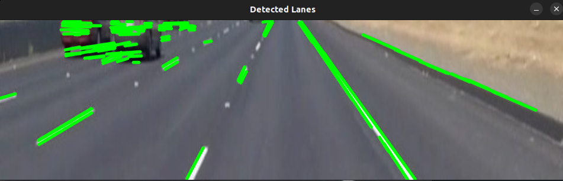

<!DOCTYPE HTML>
<!--
	Astral by HTML5 UP
	html5up.net | @ajlkn
	Free for personal and commercial use under the CCA 3.0 license (html5up.net/license)
-->
<html>
	<head>
		<title>Hrithik Kanoje</title>
		<meta charset="utf-8" />
		<meta name="viewport" content="width=device-width, initial-scale=1, user-scalable=no" />
		<link rel="stylesheet" href="assets/css/main.css" />
		<noscript><link rel="stylesheet" href="assets/css/noscript.css" /></noscript>
	</head>
	<body class="is-preload">


<p>
    
</p>
<section>
    <p>	
</section>

</body>
</html>

<!DOCTYPE HTML>
<html>
	<head>
		<title>Project 1 - Hrithik Kanoje</title>
		<meta charset="utf-8" />
		<meta name="viewport" content="width=device-width, initial-scale=1, user-scalable=no" />
		<link rel="stylesheet" href="assets/css/main.css" />
		<noscript><link rel="stylesheet" href="assets/css/noscript.css" /></noscript>
	</head>
	<body class="is-preload">

		<!-- Wrapper-->
		<div id="wrapper">

				<!-- Nav -->
                <nav id="nav">
                    <a href="index.html" class="icon solid fa-home"><span>Home</span></a>
                    <a href="index.html#work" class="icon solid fa-folder"><span>Work</span></a>
                    <a href="index.html#contact" class="icon solid fa-envelope"><span>Contact</span></a>
                    <a href="https://twitter.com/hrithik_kanoje0" class="icon brands fa-twitter"><span>Twitter</span></a>
                    <a href="https://github.com/OrbotOp" class="icon brands fa-github"><span>GitHub</span></a>
                </nav>

			<!-- Main -->
			<div id="main">
				<!-- Content specific to project 1 -->
				<article id="project1" class="panel">
					<header>
						<h2>Lane detector using opencv for autonomous vehicles </h2>
					</header>
					<section>
                        <p><b>Introduction:</b> Road safety is a critical concern in urban environments, and accurate lane detection systems can play a vital role in accident prevention and traffic management. This blog highlights a project that aims to develop an application using advanced image processing techniques to recognize lanes on urban roadways. By evaluating the system's performance on diverse datasets, including different road conditions and weather situations, we can assess its effectiveness in real-world scenarios.Understanding the Project:
                            The project's primary goal is to identify and extract lane markers from input photographs using image processing algorithms. The application employs edge detection, Hough transformations, and computer vision approaches to achieve this. By combining these techniques, the system can detect lanes on both straight and curving highways, showcasing its resilience and practicality.
                        </p>
                        <p><b>Image Processing Algorithms: </b>
                            Key to the lane detection system are the image processing algorithms utilized. Edge detection algorithms, such as the Canny detector, highlight changes in pixel intensity to identify potential lane markers. These edges are further refined and transformed using Hough transformations, enabling robust lane line detection. Computer vision approaches enhance the system's accuracy and reliability, enabling it to handle complex scenarios and challenging weather conditions.
                            <div style="text-align: center;">
                                
                             </div>
                        </p>
                        <p><b>Performance Analysis: </b>
                            To demonstrate the system's effectiveness, the project employs diverse datasets that encompass different road conditions and weather situations. Evaluating the system's performance on these datasets allows us to assess its ability to accurately detect lanes in various environments. This analysis highlights the system's reliability and its potential for real-world implementation.
                            <div class="image-collage">
                                <!-- 
                                 -->
                                
                                
                                
                                
                                
                                
                                
                                
                                <!-- Add more images here as needed -->
                              </div>                       
                        </p>    
                        <p><b>Implications for Road Safety: </b>
                            Accurate lane detection systems have significant implications for road safety. Equipping vehicles with advanced image processing capabilities can greatly reduce the risk of lane departures and collisions. Automated lane detection can provide drivers with real-time visual cues, helping them stay within their designated lanes and avoid accidents.
                        </p>    
                        <p><b>Conclusion: </b>
                            In urban areas where road safety is paramount, the development of effective lane detection systems is crucial. This project showcases a solution that utilizes image processing algorithms and computer vision techniques to accurately detect and extract lanes on urban roadways. By demonstrating its resilience across various scenarios, the project team emphasizes the system's reliability and its potential to enhance road safety. This project serves as a stepping stone toward the implementation of intelligent transportation systems that improve safety and efficiency on our roadways.
                        </p>
                        <p>Watch the project video on YouTube: <a href="https://youtu.be/li7oTXuWmk0" target="_blank">Project Video</a><br>
                           GitHub Repository: <a href="https://github.com/OrbotOp/Lane-detector-Using-OpenCV-for-autonomous-vehicle" target="_blank">GitHub Link</a>
                        </p>
					</section>
				</article>
            <!-- Back button -->
            <a href="index.html#work" class="button back-button">
            <span class="icon solid fa-arrow-left"></span>
            </a>
  
  
			</div>

			<!-- Scripts -->
			<script src="assets/js/jquery.min.js"></script>
			<script src="assets/js/browser.min.js"></script>
			<script src="assets/js/breakpoints.min.js"></script>
			<script src="assets/js/util.js"></script>
			<script src="assets/js/main.js"></script>

		</div>

	</body>
</html>

